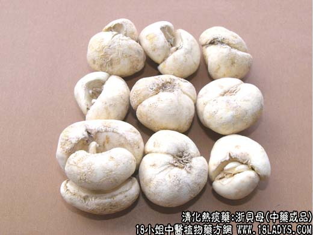
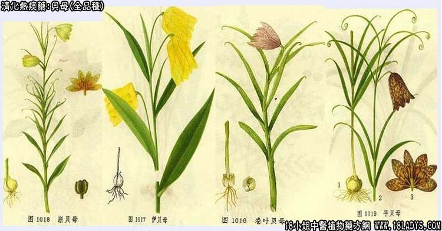

原文连接:https://www.daquan.com/post/2159.html



贝母为常用中药，《神农本草经》列为上品。陶弘景谓：其形似聚贝子，故名贝母。因来源和产区的不同及其性状的各自特点，商品主要有浙贝、川贝、平贝、生贝四大类。
1、浙贝母
别名：大贝、珠贝、元宝贝、象贝。
来源：为百合科多年生草本植物浙贝母干燥的鳞茎。均为栽培。
产地：主产于浙江宁波地区的鄞县、奉化象山等地。
采收加工：立夏（5月上旬）前后采挖。洗去泥土，摘除心芽，分成二片呈元宝状（商品“元宝贝”）：个小的，不摘除心芽（商品称“球贝”），分别放入特制的“木闯笼”内，悬空挂起，进行闯动，使贝母相互摩擦约20~30分钟，将
表皮擦净。至贝母有极少的淡黄色液汁外溢滴下时为度。然后每百斤贝母加石灰粉或贝壳粉3~4斤，使灰粉均匀地粘在贝母之上，以吸上擦出的浆液，再晒干或烘干。
性状鉴别：（1）元宝贝：均为单一的鳞瓣，半圆形，外凸内凹。高约1.7~2厘米。直径约3~4厘米，厚约0.6~1厘米。外表面黄白相兼，显粗糙如泛碱状或被有白色粉末。内表面凹陷部分黄棕色，质坚实。断面淡黄白色，显粉性。气微，味较苦。
（2）珠贝：鳞茎呈不规则的扁球形。高约1~1.5厘米，直径2~3厘米，略如算盘球故称“珠贝”，由于2~4片鳞瓣及芽心组成，外层两片较肥厚，内层鳞片幼，中间带有芽心。白色，气味同元宝贝。
以鳞片肥厚，粉质、坚实、色洁白者为佳。
性味：苦寒。
归经：人心、肺经。
功能：清肺热化痰，止嗽，解毒。
主治：外感及内热咳嗽，肺痈，肺痿，乳痈，发背及一切疮疡肿毒。
2、川贝类
包括松贝、青贝、炉贝三种。
（1）松贝
别名：尖贝、珍珠贝。
来源：为百合科多年生草本植物暗紫贝母干燥的鳞茎。均为野生。
产地：主产于四川阿坝藏族自治州的黑洼、若儿盖、毛儿盖、黑水，理县、马尔康等地。过去集散于松潘，故称“松贝”。青海的果洛；西藏的昌都以及云南等地亦产。
采集加工：6~7月积雪融化后采挖。洗净泥沙，用矾水擦去橡外皮，再用硫黄熏数小时，而后用无烟微火烘干或晒干。也有不经水洗，先薄摊于烈日之下暴晒，待贝母收干起粉，再筛除泥沙，将贝母放入麻布袋内，轻轻闯动，撞去附着物和表皮。然后用硫黄熏数小时。再烘干或晒干。
性状鉴别：
松贝：是川贝中最小的一种，如豆如球，故又有“珍球贝”之称。桃形、苡米形或圆椎形，颗粒均匀、完整。高约0.4~0.8厘米，直径约0.4~0.1厘米，均由两片鳞瓣合抱而成，一瓣特大略呈马蹄形；一瓣特小呈披针形。小瓣被大瓣包裹
并略凸陷于大瓣之中，俗称“怀中抱月”。顶端钝尖，均为闭口而无芽孔或开裂，底部略平坦，能放平坐稳。底部的中心有残留的褐色根蒂，除根蒂外，全体白色或微带黄色。质坚实，光润而显粉性。将两个鳞瓣剥开后，中心仍有更小的鳞瓣。断面白色显粉性颗粒。气微，略微苦。
以粒小，均匀，完整，质坚实、色白而有光泽者为佳。
（2）青贝
来源：为百合科多年生草本植物卷叶贝母等种贝母野生。
产地：主产于四川甘孜藏族自治州；青海玉树、果洛；西藏昌都、山南地区；云南迪庆藏族自治州的德钦、贡山、中甸等地。
加工方法：同松贝。
性状鉴别：鳞茎略呈桃形，大小不一。直径0.6~2厘米，高0.6~1.8厘米。外层两鳞大小几乎相等，相对合抱。顶端钝尖而多偏斜，多为开口呈孔状或微开裂，残茎及幼小的鳞瓣多吐露于孔口。底部略平坦，一般多能放平坐稳，根蒂略凹陷，残留有黄褐色根痕。全体淡黄色，较光洁，显粉性质坚实但不及松贝。剥开两瓣可见幼鳞瓣一二枚及茎芽一枚。断面白色。气微、味苦。
以鳞茎均匀完整，色白、粉性足者为佳。
（3）炉贝
别名：知贝。
来源：为梭砂贝。干燥的鳞茎。
产地：主产于四川甘孜藏族自治州。西藏昌都地区以及那曲的索县、巴青、比如、加黎等地。过云多集散于康定（三国时期诸葛亮曾在这里设炉造箭，故地名为打箭炉）故名炉贝。
加工方法：同松贝。
性状鉴别：鳞茎呈棱形或心脏形。高约1.5~2.5厘米，直径0.8~1.8厘米。外层两瓣几乎相等，单鳞瓣形如马牙或白贝齿。顶端较瘦尖，均呈开裂或开口状。底部偏斜，钝尖或钝圆，根蒂亦向外突出，不能放平坐稳。全体淡黄白色或黄褐
白色相兼，形如虎皮，故又有虎皮贝之称。质亦坚实，剥为两瓣可见幼鳞瓣二三枚及残留的茎芽一枚。断面白色，略显粗糙，亦显粉性。气微，味甘苦不一。
以鳞茎完整。均匀，色白，有粉性者为佳。
3、平贝
来源：为百合科多年生草本植物平贝母干燥的鳞茎。野生与栽培。
产地：主是于黑龙江五常、尚志、吉林大华甸、抚松、临江以及辽宁等地。
采集加工：6月上旬，地上部枯萎时，挖取3~4年生的鳞茎，炕干；将炕烧至温热（最高40℃）于炕上薄铺一层柴草灰（为吸收水分），把贝母均匀地排列在炕上，不可重叠，再盖一层柴草灰，约炕一昼夜，即可干燥。干后筛云柴草灰，再炕或晒一日即可。
性状鉴别：鳞茎呈扁圆形。高0.5~0.8厘米，直径1~2厘米。外层两鳞茎较肥厚，大小相似，相对合抱。顶端平坦，中心略凹陷，呈敞口状，可见内层鳞茎一二枚合抱而生。底部根蒂褐色，亦略凹陷。全体白色或黄白色。质颇坚实而显光润。断面白色，粉性。气微酸，味微苦。
以鳞茎均匀，皮细坚实，粉质者为佳。
4、生贝
别名：伊贝
来源：为百合科多年生草本植物伊贝母干燥的鳞茎。野生或栽培。
产地：主产于新疆伊犁哈萨克自治州的霍城，水定及博乐塔拉蒙古族自治州等地。
采收加工：在6~7月间挖取，洗净晒干即成；亦有洗净用盐水浸泡后再晒干，色较白。
性状鉴别：鳞茎呈扁圆球形，大小不一。高约0.8~1.5厘米，直径1~2厘米。外层两鳞瓣大小相似，相对合抱。顶端呈开口状、孔形或开裂，孔口多含有残留的茎杆。底部略平坦，根蒂多平凹，亦有微外突者，一般能放平坐稳。表皮粗糙，黄白色或黄褐色。质略疏松。断面白色或黄白色，亦显粉性。剥为两瓣可见幼鳞一二枚及残留的茎杆一枚。气微、味苦。
以鳞片肥厚，色白，坚实，有粉性者为佳。
主要成分：含生物硷主要为贝母素甲、贝母素乙，另有次要者为贝母新碱、贝母芬、贝母定碱、贝宁替定。此外，还含有贝母醇。
功效与作用：开泄肺气、除热散结。其作用为：
（1）镇咳。贝母素甲、乙对小鼠有较明显镇咳作用。
（2）阿托品样作用。低浓度下可松弛支气管平滑肌；又有使实验动物瞳孔扩大；促进肠蠕动。
（3）升压。有一定降血压作用。
（4）兴奋子宫。贝母素甲对家兔子宫有较强大的兴奋作用，已孕子宫比未孕子宫更敏感。
炮制：磨粉或捣碎，生用。
性味：辛、苦、微寒。
归经：入心、肺经。
功能：润肺化痰，清肺热，除肺燥。
主治：阴虚肺燥的虚症咳嗽，吐血及虚劳咳嗽等症。
临床应用：1、治热咳，急性者较适宜，如风热感冒、急性上呼吸道炎、肺炎之咳嗽，有口于喉痒，痰稠色黄者，可用浙贝配连翘、牛蒡子、山栀皮、蒌皮等，方如蒌贝汤。又可配桑叶、杏仁、菊花、牛蒡子、方如桑杏汤（见杏仁项下）
2、治瘰疬（颈淋巴结核、慢性淋巴结炎）配玄参、牡蛎，方如玄参牡贝汤（见玄参项下），或配玄参、牡蛎、夏枯草、生地，方如颈淋巴结炎方。前人认为浙贝有散结作用，但其原理尚等进一步研究。
3、治胃、十二指肠溃疡病，作为乌贼骨的辅助药，处方和治疗原理参考贼骨项下。
4、治痈肿，尤其乳房炎，作辅助药用，配银花、菊花、蒲公英等。
附：1、浙贝与川贝比较：浙贝药性较燥烈，而川贝药性较缓和，气味不浓，小儿用之颇合适。浙贝清热散结作用较强，多用于急性风热咳嗽，川贝润肺化痰作用较好，多用于慢性虚劳咳嗽。2、前人认为贝母反乌头，现代一些实验初步证明贝母和乌头混合给药后，实验动物并无严生反应。
用量：一般9~15g，治瘰疬可用至18~30g。
处方举例：1、蒌贝汤：瓜蒌皮9g，浙贝9g，牛蒡子9g，连翘9g，山栀皮6g，桑叶6g，花粉9g，薄荷5.5g（后下），水煎服。
2、颈淋巴结炎方：浙贝18g，夏枯草15g，生地15g，玄参15g，生牡蛎30g（先煎），水煎服。
注：1、川贝类在商品上习惯认为松贝、青松最好；炉贝较好；平贝亦好；生贝较次。
2、除上述的贝母外，甘肃省产一种岷贝形太与松贝相似，有的小鳞瓣不生于合抱的中心，而生于大鳞瓣的前后，前面呈“怀中抱月”形，后面有一浅纵沟为小鳞瓣脱落的痕迹，亦有的两个鳞瓣基本相等，开口较大合抱而生。还有陕西的太白贝、浙江的东贝、湖北的板贝等多种贝母，但产量较少，多地产地销。
3、贝母因富粉性，在加工烘干时，温度不宜超过40℃，否则容易湖化，堆积过厚会自行发热产生阴碴，晒晾时，翻运过勤及反复揉擦也会使贝母“熟熥”，干后均会形成油子或僵瓣，使贝母品质降低。